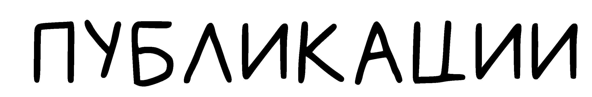

История кинематогрофа
Как появились кинофестивали и какова их функция сегодня?
Берлинский кинофестиваль в 2021 году пройдет в два этапа
Берлинский международный кинофестиваль (Берлинале) в следующем году пройдет в два этапа: в марте состоятся онлайн-мероприятия для деятелей киноиндустрии, а в июне — кинопоказы для широкой публики. Традиционно кинофестиваль проходит в феврале.
«71-й Международный берлинский кинофестиваль из-за текущей ситуации с COVID-19 разработал новый фестивальный формат для 2021 года и рад, что фестиваль будет проведен и для индустрии, и для широкой общественности»,— сообщается на сайте Берлинале.
Программа фестиваля будет опубликована в феврале и представлена деятелям киноиндустрии в виртуальном формате на платформах European Film Market, Berlinale Co-Production Market, Berlinale Talents и World Cinema Fund. С 1 по 5 марта международное жюри во время онлайн-просмотров оценит фильмы и распределит призы. В июне фильмы-лауреаты покажут в кинотеатрах и под открытым небом.
Возрожден Международный Ташкентский кинофестиваль
В рамках IV Международного конгресса национальной кинематографии, на котором присутствует и корреспондент Sputnik Узбекистан, прозвучало, — согласно постановлению главы государства, в столице решено возобновить проведение Международного Ташкентского кинофестиваля
Узбекстанский режиссер Рашид Маликов высказался о важности этого решения, подчеркнув, что для него это вдвойне приятное событие, так как он участвовал в организации последнего кинофестиваля. По словам режиссера, это был кинофорум класса А и «Узбеккино» сделает все, чтобы вернуть этот статус.
Для справки: Ташкентский международный кинофестиваль проводится Госкино СССР и СК ССР при участии Госкино Узбекской ССР и СК Узбекской ССР один раз в два года с 1968-го. Это был крупнейший в мире форум кинематографии стран Азии, Африки и Латинской Америки. Последний кинофестиваль состоялся в 1997 году.
Фильм Андрея Кончаловского удостоился Гран-при на кинофестивале в Польше
В Варшаве проходит один из крупнейших фестивалей российского кино в Европе "Спутник над Польшей". Как сообщает ТАСС, главным призёром стала картина Кончаловского "Дорогие товарищи!".
В главном конкурсе художественных фильмов приняли участие двенадцать новинок российского кино. На втором месте — драма "Француз" (2019) актёра и режиссёра Андрея Смирнова. Третье место завоевала картина Филиппа Юрьева о юном чукотском охотнике "Китобой" (2020). Этот фильм ранее был отмечен на Венецианском фестивале и "Кинотавре" в Сочи.
В категории документального кино Гран-при получила ещё одна работа Кончаловского "Неунывающие люди" (2020). На втором месте оказался фильм Тарковского" Андрей Тарковский. Кино как молитва" (2019). Третьего места удостоилась картина Натальи Кадыровой "Мама для Юли" (2019) о судьбе ребёнка, рождённого в тюрьме.
Фестиваль "Спутник над Польшей" проходит в 14 раз. В 2020-м году мероприятие впервые организовано в онлайн-формате из-за пандемии. В течение десяти дней зрителям в Польше на специальной интернет-платформе показали более 60 картин из России в различных жанрах. В этом году смотр продлили на неделю — до 26 декабря. Решение было принято из-за высокого спроса желающих.